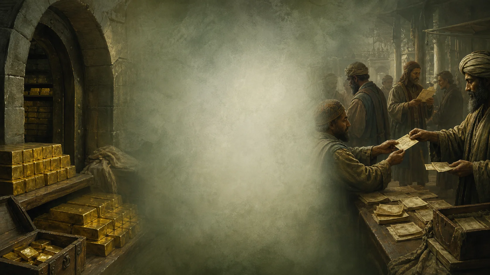

ทั้งหนัก ทั้งพกพายาก
และตกเป็นเป้าโจมตีปล้นชิง
จึงมีผู้คิดค้นธุรกิจรับฝากทองขึ้น ผู้ฝากนำทองคำ
มาแลกเป็นใบรับฝากทองที่เบากว่า พกพาง่ายกว่า
และปลอดภัยกว่าเพื่อความสะดวกในการเคลื่อนย้ายเดินทาง

เมื่อกระดาษสะดวกเกินไป
คนก็เริ่มใช้กระดาษแทนทอง
เมื่อกระดาษแต่ละใบคือตัวแทนของทอง เราก็ไม่จำเป็น
ต้องแลกทองคืนบ่อยๆ การชำระหนี้ด้วยตั๋วแลกทอง
เริ่มเป็นที่ยอมรับในสังคมไม่ต่างกับการใช้ทองคำจริง
และในเมื่อกระดาษจะเขียนให้มีมูลค่าเท่าไรก็ได้
เราก็สามารถมีกระดาษมูลค่าน้อยและกระดาษมูลค่ามาก
สำหรับธุรกรรมมูลค่าต่างๆ กันได้